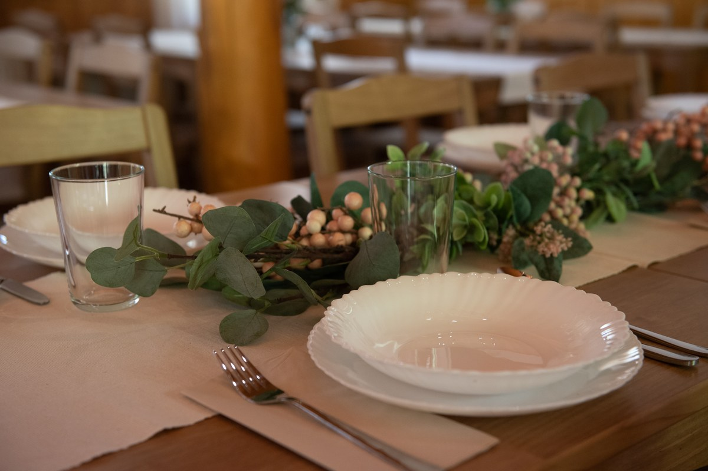
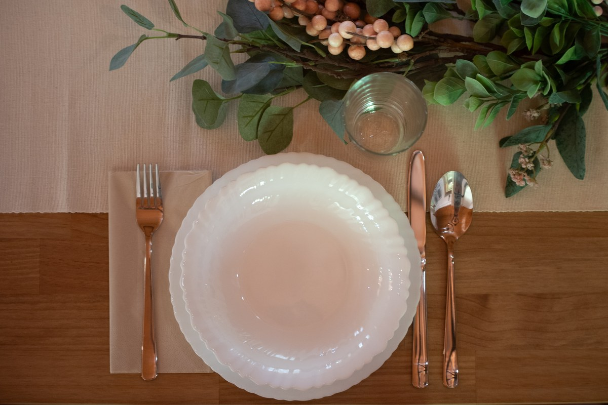

Szolgáltatások
A saját elképzeléseitek szerint ünnepeljetek
A Parton termében szeretjük meghagyni a szabadságot. Nem kötött csomagokban gondolkodunk, hanem egy jól felszerelt, rugalmasan használható helyszínt adunk.

A helyszínbérlés része
A rendezvényterem használata, a tópart és a kültéri területek, asztalok és székek, valamint a felszerelt konyha használata. Az asztalok elrendezése az esemény jellegéhez igazítható, így a terem lehet egyszerre meghitt vacsorahelyszín vagy nagyobb közös tér.
Konyha
A helyszínhez felszerelt konyha tartozik, amely a rendezvény ideje alatt használható. Saját étellel vagy szolgáltatóval is érkezhettek.
Terítés és eszközök
Igény esetén a rendezvényhez szükséges étkészlet, poharak és egyéb eszközök is rendelkezésre állnak.
Dekoráció
A Parton természetes, visszafogott enteriőrje önmagában is hangulatos, de szabadon alakítható az esemény stílusához. Saját dekorációval vagy választott dekoratőrrel is készülhettek.
Szükségetek van valamire?
Nem szeretnénk mindent kötelező csomagba tenni. Ha azonban segítségre van szükségetek dekoráció, zene, fotózás vagy más szolgáltató megtalálásában, szívesen ajánlunk bevált szakembereket.

Ti álmodjátok meg.
Írd meg, mikor, hány fővel és milyen alkalomra érkeznél – és összeállítjuk a személyre szabott ajánlatot.
Árak és ajánlatkérés